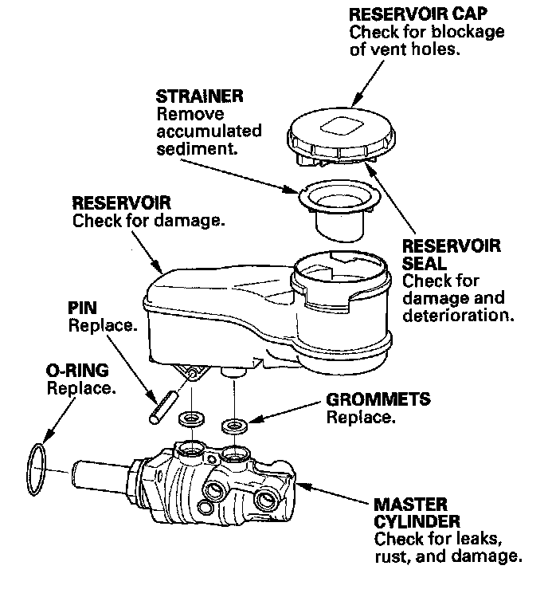

Brake Master Cylinder: Testing and Inspection
Master Cylinder Inspection1. Inspect and note these items:
^ Before reassembling, check that all parts are free of dirt and other foreign particles.
^ Do not try to disassemble the master cylinder assembly. Replace the master cylinder assembly with a new part if necessary.
^ Do not allow dirt or foreign matter to contaminate the brake fluid.
